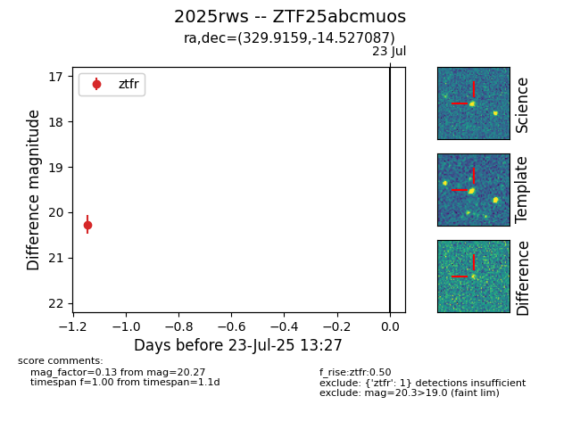

Target ZTF25abcmuos at 2025-07-23 11:52, see:
FINK: fink-portal.org/ZTF25abcmuos
Lasair: lasair-ztf.lsst.ac.uk/objects/ZTF25abcmuos
ALeRCE: alerce.online/object/ZTF25abcmuos
TNS: wis-tns.org/object/2025rws
YSE: ziggy.ucolick.org/yse/transient_detail/2025rws
alt names
ZTF25abcmuos (ztf,fink)
2025rws (tns,yse)
coordinates:
equatorial (ra, dec) = (329.9159,-14.52709)
galactic (l, b) = (41.5436,-48.16276)
photometry
last ztfr=20.27
1 ztfr detections
